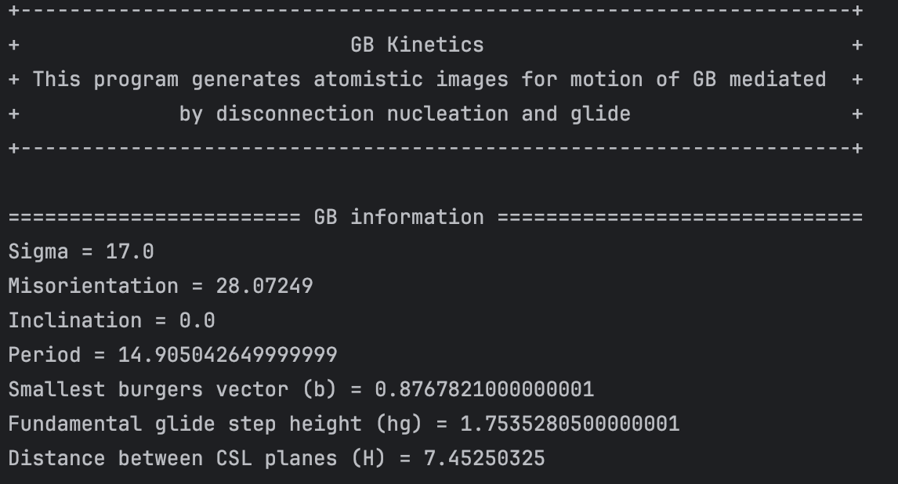
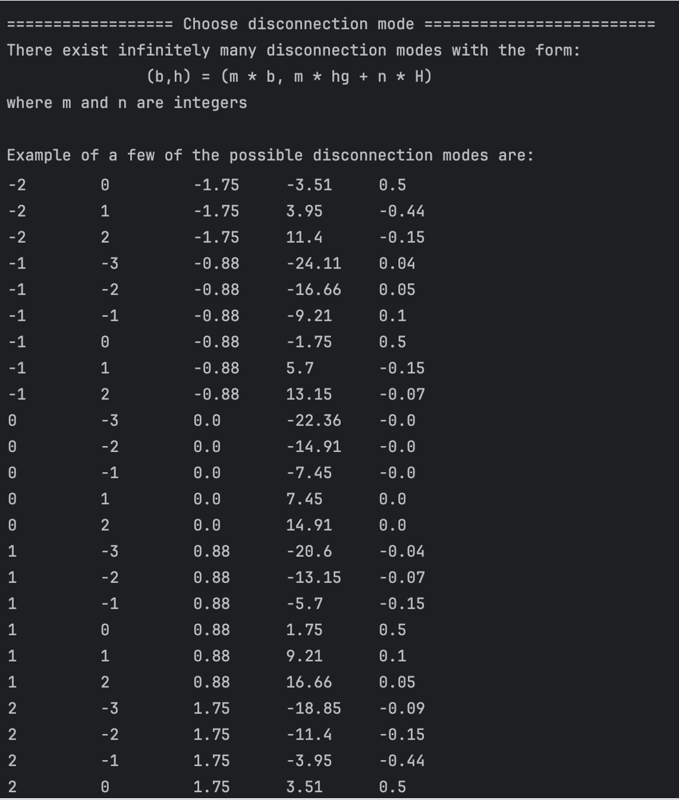
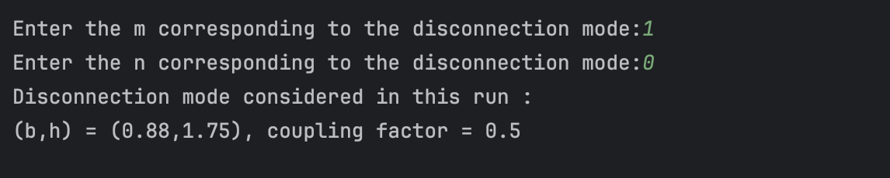
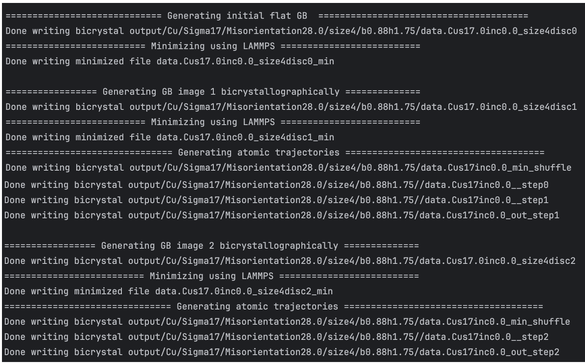
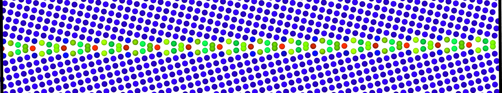
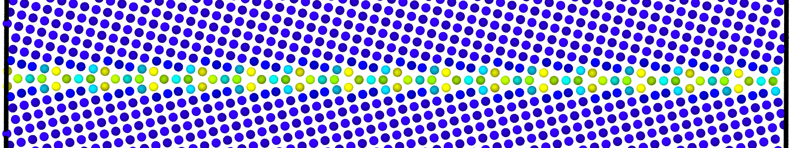
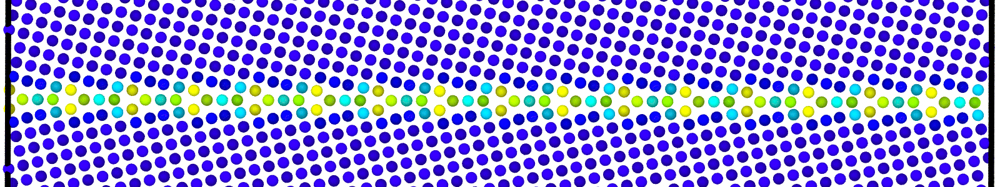
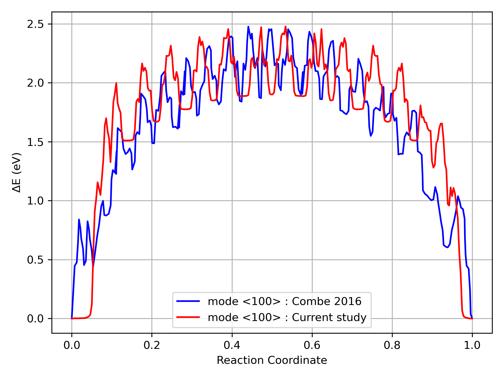

GB Kinetics Example
This example demonstrates how to run the GB kinetics script and walks through where the results are stored. For this example, we focus on a \(\Sigma\) 17[001](410) STGB in Copper (Cu) with box length along the GB = 8 x GB period and box length along tilt axis = 4 x CSL length along tilt axis.
Open GB_kinetics.py and input Gb information, displacements recorded earlier and parameters for optimal transport calculations. Start with specifing the parameters required to identify the material and GB such as sigma number, misorientation, inclination, material symbol, and tilt axis.
size_along_gb_perioddetermines the length of the box along the gb period. The length of the box generated is 2*period*size_along_gb_period.size_along_tilt_axisdetermines the length of the box along the tilt axis. The length of the box generated is 2*(CSL length along tilt axis)*size_along_tilt_axis.lattive_Vectorsdetermine what crystal system is under consideration.
1#---------- Input parameters for GB in question ---------------#
2# Element
3element = "Cu"
4# Sigma value of Gb under consideration
5sigma = 17
6# Misorientation of the Gb
7misorientation = 28
8# Inclination of the GB
9inclination = 0.0
10# Lattice parameter of the element (try using the lat par corresponding to the potential you intend to use)
11latticeParameter = 3.615
12# Tilt axis of GB
13axis = [0, 0, 1]
14# Size of system along the GB period in terms of 2*CSL period
15size_along_gb_period = 4
16# Size of system along the tilt axis in terms of 2*CSL period
17size__along_tilt_axis = 2
18# Lattice Vectors for the crystal system (current implementation is tested for fcc only)
19lattice_vector = np.array([[0.5, 0.5, 0.0],
20 [0.0, 0.5, 0.5],
21 [0.5, 0.0,0.5]])
Next specify the parameters for Sinkhorn Algorithm run which determines the atomic trajectories in transformed region.
regularizationParameterdetermines the regularization for Sinkhorn algorithm. It can be loosely thought of as a measure of temperature. LowerregularizationParametermeans algorithm is more contrained and gives out only the smallest displacement maps. HigherregularizationParametermight give out multiple atomic mappings some of them might not be the lowest displacement.maximumIterationsdetermines the maximum number of iterations done by Sinkhorn Algorithm. If the algorithm does not converge (code will raise this error), increase this parameter.chooseDisconnectionis an optional argument which allows users to choose the disconnection mode if they want. SetchooseDisconnection = Trueif you want to choose the disconnection mode,choose_disconnection = Falsewill automatically create disconnection mode with smallest burgers vector and corresponding step height.
1#-------------- Parameters for min-shuffle algorithm --------------#
2# Regularization parameter for min-shuffle algorithm.
3# Raised automatically (doubled, up to six times) if Sinkhorn will not converge at it
4# within maximumIterations; the value actually used is printed for every solve.
5regularizationParameter = 0.005
6# Maximum iterations for min-shuffle algorithm, per regularization attempt.
7maximumIterations = 1000000
8# Solve the shuffle once on the smallest bicrystal there is -- one CSL period long,
Specify the file that contains bicrystallography data from oilab output in
oilab_output_file. Current implementation has output files included for 3 tilt axes ([001],[110],[111]), stored inDatafolder.output_folderis the folder in which the output of this program is stored.
1# instead of solving optimal transport separately for each one.
2#
3# Behind a disconnection the boundary has simply moved: one slab of grain A has become
4# grain B, identically everywhere inside the loop, so the whole shuffle fits in one CSL
5# cell. Solving it per image re-derives that cell over and over, at a cost that grows
6# as the square of the atoms involved -- which is why large systems are slow.
Specify locations of external programs needed for running this code. This includes location of lammps installation, mpi installation. Also indicate the full path to the lammps potential file you want to use.
1# Set False to solve every image from scratch (the original behaviour).
2map_shuffle_from_reference = True
3# Go further and build each image by replicating the relaxed reference cell, rather
4# than masking it out of the reference lattice. The elementary shuffle and the
5# disconnection's plastic field are laid over the tiled cell. Turning this on turns
6# map_shuffle_from_reference on too, since both need the same reference.
7#
Input the displacements that minimize GB to minimum energy structure. Can be obtained using
gridSearch.pyscript.
1# Sigma17 at size 2, minimizing every image as this script does:
2#
3# image 0 1 2 3 4 total
Specify the parameters for NEB run.
partitionsis the linearly interpolated images used in NEB run.neb_modelets you choose if you want to run intermediate images through NEB or not.neb_mode= 1 -> NEB with intermediate images,neb_mode= 0 -> NEb with just the initial and final GB images
1# replicated 22 878 923 1080 1040 3943 CG steps
2#
3# The flat GB is a true repeat of the reference and converges 36x faster. Every other
4# image carries two disconnection cores and a plastic field that varies across it, so
5# a relaxed cell with that field laid over it is no closer to the minimum than ideal
6# sites are -- it is slightly further. Both routes relax to the same energy to within
7# 1e-5 eV/atom, so this is a question of cost, not correctness.
8#
Finally call the function that calls the required functions and carries out the procedure detailed in the paper.
1# 2*size_along_gb_period-1 intermediate minimizations are skipped outright.
2replicate_from_reference = True
3# Minimize only the flat GB and the fully stepped boundary, leaving the images in
4# between as they were built. Those two are the states whose energies mean something;
5# the images between them are a starting path, and NEB relaxes it.
6#
7# Only worth turning on alongside replicate_from_reference, which builds those
8# intermediates out of an already relaxed cell. Without it they are ideal lattice
9# sites under an analytic slip field, and handing NEB that as a path is a much rougher
10# start than this saves.
11minimize_endpoints_only = True
12# Put True if you want to choose the disconnection mode, False will automatically create disconnection mode with
13# smallest burgers vector and corresponding step height
14chooseDisconnection = True
15
16# ------------------------- Input and output folders -------------------- #
17# Location of bicrystallographic data obtained using oILAB
18oilab_output_file = "data/fcc0-10.txt"
19# Location of directory where output is to be stored, the program creates subdirectories
20# for each element, sigma value , misorientation and disconnection mode within it
21output_folder = "output/"
Save and run GB_kinetics.py
$ python3 GB_kinetics.py
User input
After running GB_kinetics.py, the program will show the input parameters pertinent to system
user wants to explore.
{kind=link}

Then the program asks the user to choose the disconnection mode they want to construct. To do this, it lists out the disconnection modes calculated using GB information
{kind=link}

User can input the values of m and n, that corresponds to the disconnection mode they want to
construct. The program confirms the disconnection mode entered.
{kind=link}

Command line Output
The code prints out which configuration it is generating and when completed, prints out the location of the output generated.
{kind=link}

Output
All the generated configurations are stored in:
output/<Element>/Sigma<GB sigma number>/Misorientation<GB misorientation>.0/size<Size of box along GB>/b<Disconnection burgers vector>h<disconnection step height>
This code generates atomic configurations of different types:
LAMMPS data files for bicrystal with atoms obtained from bicrystallographic data and an applied plastic displacement , as discussed in Theory. These files are named as :
data.Cus<GB Sigma>.0inc<GB inclination>_size<Size along GB period>disc<configuration number>.
{kind=link}

LAMMPS data files for minimized bicrystal with atoms now representing GB ground state. These files are named as :
data.Cus<GB Sigma>.0inc<GB inclination>_size<Size along GB period>disc<configuration number>_min.
{kind=link}

LAMMPS data files for bicrystals with atomic trajectories calculated using min-shuffle algorithm. These files are named as :
data.Cus<GB Sigma>.0inc<GB inclination>_size<Size along GB period>__step<configuration number>.
{kind=link}

Data file corresponding to the bicrystals with atomic trajectories, containing the atoms that are to be included in
nebcalculations. These files are named as :data.Cus<GB Sigma>.0inc<GB inclination>_size<Size along GB period>_out_step<configuration number>.

A LAMMPS data file containing multiple timesteps showing minimization of the bicrystal generated from bicrystallography. These files are named as :
data.Cus<GB Sigma>.0inc<GB inclination>_size<Size along GB period>disc<configuration number>_minmov.
The post processing function also plots the MEP w.r.t the reaction coordinates.Here, we present the results obtained by running this code and for comparison to existing method,we compare it with MEP calculated by Combe et. al. [1] for the same GB and box dimensions.
{kind=link}

References
[1] N. Combe, F. Mompiou, M. Legros, Disconnections kinks and competing modes in shear-coupled grain boundary migration, Physical Review B 93 (2016) 024109.